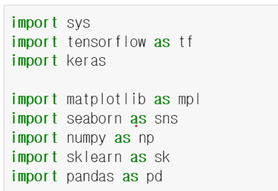

학습 내용
내 컴퓨터의 파이썬 버전을 확인한다.
내 컴퓨터에 가상환경을 만든다.
내 컴퓨터에 tensorflow와 keras를 설치한다.
환경
anconda 5.
python 3.8.8
가상환경
python 3.8.13
tensorflow 2.9
01 내 컴퓨터의 파이썬 버전을 확인
(base) C:\WINDOWS\system32>python --version
Python 3.8.13
02 내 컴퓨터에 가상 환경을 만들기
가상 환경 리스트 확인
(base) C:\WINDOWS\system32>conda env list
=============================
(base) C:\WINDOWS\system32>conda env list
# conda environments:
#
base * C:\Users\front\anaconda3
=============================
가상 환경 만들기 및 가상 환경 활성화 시키기
가상 환경 만들기
- 파이썬 버전은 3.8로 지정하여 설치
(base) C:\WINDOWS\system32>conda create -n tf2x python=3.8
=============================
(base) C:\WINDOWS\system32>conda create -n tf2x python=3.8
Collecting package metadata (current_repodata.json): done
Solving environment: done
## Package Plan ##
environment location: C:\Users\front\anaconda3\envs\tf2x
added / updated specs:
- python=3.8
The following packages will be downloaded:
package | build
---------------------------|-----------------
ca-certificates-2020.12.8 | haa95532_0 122 KB
certifi-2020.12.5 | py38haa95532_0 141 KB
openssl-1.1.1i | h2bbff1b_0 4.8 MB
pip-20.3.3 | py38haa95532_0 1.8 MB
setuptools-51.0.0 | py38haa95532_2 741 KB
vc-14.2 | h21ff451_1 8 KB
vs2015_runtime-14.27.29016 | h5e58377_2 1007 KB
wheel-0.36.2 | pyhd3eb1b0_0 33 KB
------------------------------------------------------------
Total: 8.6 MB
The following NEW packages will be INSTALLED:
ca-certificates pkgs/main/win-64::ca-certificates-2020.12.8-haa95532_0
certifi pkgs/main/win-64::certifi-2020.12.5-py38haa95532_0
openssl pkgs/main/win-64::openssl-1.1.1i-h2bbff1b_0
pip pkgs/main/win-64::pip-20.3.3-py38haa95532_0
python pkgs/main/win-64::python-3.8.5-h5fd99cc_1
setuptools pkgs/main/win-64::setuptools-51.0.0-py38haa95532_2
sqlite pkgs/main/win-64::sqlite-3.33.0-h2a8f88b_0
vc pkgs/main/win-64::vc-14.2-h21ff451_1
vs2015_runtime pkgs/main/win-64::vs2015_runtime-14.27.29016-h5e58377_2
wheel pkgs/main/noarch::wheel-0.36.2-pyhd3eb1b0_0
wincertstore pkgs/main/win-64::wincertstore-0.2-py38_0
zlib pkgs/main/win-64::zlib-1.2.11-h62dcd97_4
Proceed ([y]/n)? y <- y를 선택 후 진행.
=============================
가상 환경 활성화 시키기
done
#
# To activate this environment, use
#
# $ conda activate tf2x # 가상 환경 활성화
#
# To deactivate an active environment, use
#
# $ conda deactivate # 가상 환경 비 활성화
가상 환경 활성화 시키기
(base) C:\WINDOWS\system32>conda activate tf2x
(tf2x) C:\WINDOWS\system32>
03 내 컴퓨터에 tensorflow와 keras를 설치하기
tensorflow 설치하기
(tf2x) C:\WINDOWS\system32>pip install tensorflow
=================================
(tf2x) C:\WINDOWS\system32>pip install tensorflow
Collecting tensorflow
Downloading tensorflow-2.9.1-cp38-cp38-win_amd64.whl (444.1 MB)
|████████████████████████████████| 444.1 MB 62 kB/s
Collecting keras-preprocessing>=1.1.1
Downloading Keras_Preprocessing-1.1.2-py2.py3-none-any.whl (42 kB)
|████████████████████████████████| 42 kB 462 kB/s
Collecting tensorflow-io-gcs-filesystem>=0.23.1
Downloading tensorflow_io_gcs_filesystem-0.26.0-cp38-cp38-win_amd64.whl (1.5 MB)
|████████████████████████████████| 1.5 MB 6.4 MB/s
Collecting tensorflow-estimator<2.10.0,>=2.9.0rc0
Downloading tensorflow_estimator-2.9.0-py2.py3-none-any.whl (438 kB)
|████████████████████████████████| 438 kB ...
Collecting astunparse>=1.6.0
Downloading astunparse-1.6.3-py2.py3-none-any.whl (12 kB)
Collecting opt-einsum>=2.3.2
Downloading opt_einsum-3.3.0-py3-none-any.whl (65 kB)
|████████████████████████████████| 65 kB 1.3 MB/s
Collecting h5py>=2.9.0
Downloading h5py-3.7.0-cp38-cp38-win_amd64.whl (2.6 MB)
|████████████████████████████████| 2.6 MB 6.4 MB/s
Requirement already satisfied: setuptools in c:\users\totofriend\anaconda3\envs\tf2x\lib\site-packages (from tensorflow) (61.2.0)
....
....
....
Installing collected packages: urllib3, pyasn1, idna, charset-normalizer, zipp, six, rsa, requests, pyasn1-modules, oauthlib, cachetools, requests-oauthlib, importlib-metadata, google-auth, werkzeug, tensorboard-plugin-wit, tensorboard-data-server, pyparsing, protobuf, numpy, markdown, grpcio, google-auth-oauthlib, absl-py, wrapt, typing-extensions, termcolor, tensorflow-io-gcs-filesystem, tensorflow-estimator, tensorboard, packaging, opt-einsum, libclang, keras-preprocessing, keras, h5py, google-pasta, gast, flatbuffers, astunparse, tensorflow
Successfully installed absl-py-1.1.0 astunparse-1.6.3 cachetools-5.2.0 charset-normalizer-2.1.0 flatbuffers-1.12 gast-0.4.0 google-auth-2.9.0 google-auth-oauthlib-0.4.6 google-pasta-0.2.0 grpcio-1.47.0 h5py-3.7.0 idna-3.3 importlib-metadata-4.12.0 keras-2.9.0 keras-preprocessing-1.1.2 libclang-14.0.1 markdown-3.3.7 numpy-1.23.1 oauthlib-3.2.0 opt-einsum-3.3.0 packaging-21.3 protobuf-3.19.4 pyasn1-0.4.8 pyasn1-modules-0.2.8 pyparsing-3.0.9 requests-2.28.1 requests-oauthlib-1.3.1 rsa-4.8 six-1.16.0 tensorboard-2.9.1 tensorboard-data-server-0.6.1 tensorboard-plugin-wit-1.8.1 tensorflow-2.9.1 tensorflow-estimator-2.9.0 tensorflow-io-gcs-filesystem-0.26.0 termcolor-1.1.0 typing-extensions-4.3.0 urllib3-1.26.10 werkzeug-2.1.2 wrapt-1.14.1 zipp-3.8.0
(tf2x) C:\WINDOWS\system32>
추가 라이브러리 설치
keras, seaborn, pandas, jupyter, matplotlib, scikit-learn
[명령어] pip install keras seaborn pandas jupyter matplotlib scikit-learn
(tf2x) C:\WINDOWS\system32>pip install keras seaborn pandas jupyter matplotlib scikit-learn jupyterlab
Requirement already satisfied: keras in c:\users\totofriend\anaconda3\envs\tf2x\lib\site-packages (2.9.0)
Collecting seaborn
Downloading seaborn-0.11.2-py3-none-any.whl (292 kB)
|████████████████████████████████| 292 kB 2.2 MB/s
Collecting pandas
Downloading pandas-1.4.3-cp38-cp38-win_amd64.whl (10.6 MB)
|████████████████████████████████| 10.6 MB 3.3 MB/s
Collecting jupyter
Downloading jupyter-1.0.0-py2.py3-none-any.whl (2.7 kB)
Collecting matplotlib
Downloading matplotlib-3.5.2-cp38-cp38-win_amd64.whl (7.2 MB)
|████████████████████████████████| 7.2 MB 6.4 MB/s
Collecting scikit-learn
Downloading scikit_learn-1.1.1-cp38-cp38-win_amd64.whl (7.3 MB)
|████████████████████████████████| 7.3 MB 3.3 MB/s
Collecting scipy>=1.0
Downloading scipy-1.8.1-cp38-cp38-win_amd64.whl (36.9 MB)
|████████████████████████████████| 36.9 MB 3.3 MB/s
Requirement already satisfied: numpy>=1.15 in c:\users\totofriend\anaconda3\envs\tf2x\lib\site-packages (from seaborn) (1.23.1)
Collecting pytz>=2020.1
Downloading pytz-2022.1-py2.py3-none-any.whl (503 kB)
|████████████████████████████████| 503 kB 6.8 MB/s
Collecting python-dateutil>=2.8.1
Downloading python_dateutil-2.8.2-py2.py3-none-any.whl (247 kB)
|████████████████████████████████| 247 kB 6.4 MB/s
Collecting notebook
Downloading notebook-6.4.12-py3-none-any.whl (9.9 MB)
|████████████████████████████████| 9.9 MB 6.8 MB/s
Collecting nbconvert
Downloading nbconvert-6.5.0-py3-none-any.whl (561 kB)
|████████████████████████████████| 561 kB 6.4 MB/s
....
....
....
Downloading pure_eval-0.2.2-py3-none-any.whl (11 kB)
Installing collected packages: traitlets, pywin32, pyrsistent, importlib-resources, attrs, wcwidth, tornado, pyzmq, python-dateutil, pycparser, pure-eval, parso, nest-asyncio, jupyter-core, jsonschema, fastjsonschema, executing, entrypoints, asttokens, webencodings, stack-data, soupsieve, pygments, prompt-toolkit, pickleshare, nbformat, matplotlib-inline, MarkupSafe, jupyter-client, jedi, decorator, colorama, cffi, backcall, tinycss2, pywinpty, psutil, pandocfilters, nbclient, mistune, jupyterlab-pygments, jinja2, ipython, defusedxml, debugpy, bleach, beautifulsoup4, argon2-cffi-bindings, terminado, Send2Trash, prometheus-client, nbconvert, ipython-genutils, ipykernel, argon2-cffi, notebook, widgetsnbextension, qtpy, pytz, pillow, kiwisolver, jupyterlab-widgets, fonttools, cycler, threadpoolctl, scipy, qtconsole, pandas, matplotlib, jupyter-console, joblib, ipywidgets, seaborn, scikit-learn, jupyter
Successfully installed MarkupSafe-2.1.1 Send2Trash-1.8.0 argon2-cffi-21.3.0 argon2-cffi-bindings-21.2.0 asttokens-2.0.5 attrs-21.4.0 backcall-0.2.0 beautifulsoup4-4.11.1 bleach-5.0.1 cffi-1.15.1 colorama-0.4.5 cycler-0.11.0 debugpy-1.6.2 decorator-5.1.1 defusedxml-0.7.1 entrypoints-0.4 executing-0.8.3 fastjsonschema-2.15.3 fonttools-4.34.4 importlib-resources-5.8.0 ipykernel-6.15.1 ipython-8.4.0 ipython-genutils-0.2.0 ipywidgets-7.7.1 jedi-0.18.1 jinja2-3.1.2 joblib-1.1.0 jsonschema-4.6.2 jupyter-1.0.0 jupyter-client-7.3.4 jupyter-console-6.4.4 jupyter-core-4.11.1 jupyterlab-pygments-0.2.2 jupyterlab-widgets-1.1.1 kiwisolver-1.4.3 matplotlib-3.5.2 matplotlib-inline-0.1.3 mistune-0.8.4 nbclient-0.6.6 nbconvert-6.5.0 nbformat-5.4.0 nest-asyncio-1.5.5 notebook-6.4.12 pandas-1.4.3 pandocfilters-1.5.0 parso-0.8.3 pickleshare-0.7.5 pillow-9.2.0 prometheus-client-0.14.1 prompt-toolkit-3.0.30 psutil-5.9.1 pure-eval-0.2.2 pycparser-2.21 pygments-2.12.0 pyrsistent-0.18.1 python-dateutil-2.8.2 pytz-2022.1 pywin32-304 pywinpty-2.0.6 pyzmq-23.2.0 qtconsole-5.3.1 qtpy-2.1.0 scikit-learn-1.1.1 scipy-1.8.1 seaborn-0.11.2 soupsieve-2.3.2.post1 stack-data-0.3.0 terminado-0.15.0 threadpoolctl-3.1.0 tinycss2-1.1.1 tornado-6.2 traitlets-5.3.0 wcwidth-0.2.5 webencodings-0.5.1 widgetsnbextension-3.6.1
추가 설치 - 2022/05/22 기준 아래 내용을 설치을 진행하지 않아도 해결.
만약 tensorflow를 import 할때, 에러 발생하면 아래를 수행하여 진행해 본다.
pip install --upgrade pywin32==225
python C:\Users\[사용자이름]\anaconda3\Scripts\pywin32_postinstall.py -install
(예) python C:\Users\toto\anaconda3\Scripts\pywin32_postinstall.py -install
04 주피터 노트북 실행 후, 기본 환경 확인
(tf2x) C:\WINDOWS\system32>jupyter notebook
import sys
import tensorflow as tf
import keras
import matplotlib as mpl
import seaborn as sns
import numpy as np
import sklearn as sk
import pandas as pd
print(sys.version)
print(tf.__version__)
print(keras.__version__)
print(mpl.__version__)
print(sns.__version__)
print(np.__version__)
print(sk.__version__)
print(pd.__version__)
05 파이썬 버전 및 라이브러리 버전 확인

_files/Image [1].png)